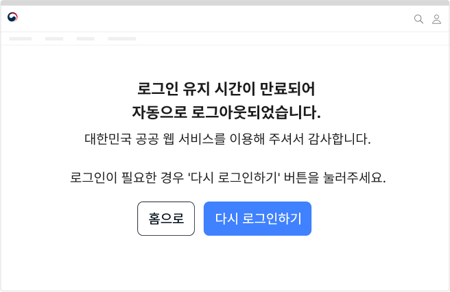
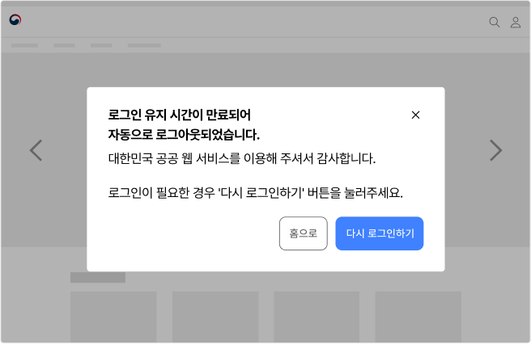
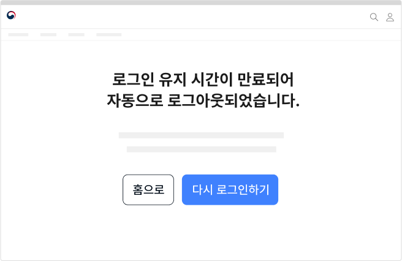

서비스 패턴 로그인로그아웃
로그인은 사용자의 신원을 확인하는 과정으로 사용자가 서비스에 접근할 수 있도록 하는 수단이다. 사용자에게 개인화된 경험을 제공하거나 사용자의 신분/신원을 인증하고자 하는 경우에 사용하기 적합하다.
유형
사용자 요청에 의한 로그아웃
서비스의 이용을 완전하게 종료하기로 결정한 사용자 또는 로그인 상태를 해제하고자 하는 사용자가 로그아웃을 시도한 상황
이용 세션 만료에 의한 로그아웃
서비스 이용 중 로그인 세션 시간이 만료되어 로그인 만료 안내 모달 출현 후 로그아웃이 실행된 상황
구조
- 1. 제목: 로그아웃된 상황을 안내하는 제목
- 2. 본문: 로그아웃 상태로 전환된 이유에 대한 설명
- 3. 액션 버튼: 로그아웃 이후의 사용자 행동을 유도하기 위한 액션 버튼으로 메인 화면으로 이동하는 링크와 다시 로그인하기 버튼이 제공됨
사용성 가이드라인
-
로그아웃 상태로 전환되었음을 분명하게 보여준다. 권장
로그인 실행 버튼의 레이블을 ‘로그인’으로 전환하는 등의 방법으로 로그아웃 상태에 있음을 사용자에게 알려주어야 한다.
-
사용자 요청에 의해 로그아웃이 실행되는 경우 결과
화면과 로그아웃 실행 사이에 스피너를 제공한다. 우수
시스템이 사용자의 요청에 따라 로그아웃 동작을 실행하는 반응이 진행되고 있음을 사용자가 인지할 수 있도록 의도적으로 스피너를 통해 피드백을 제공한다.
-
로그아웃이 완료된 후, 상황에 적합한 화면으로 이동해야
한다. 권장
사용자가 의도적으로 로그아웃 버튼을 눌러 로그아웃한 경우, 메인 화면으로 연결되어야 한다.
이용 세션 만료에 의해 로그아웃된 경우, 로그아웃 완료 화면으로 연결되어야 한다.[모범 사례 1]

사용자가 의도적으로 로그아웃 버튼을 눌러 로그아웃한 경우 [모범 사례 2]

사용자가 의도적으로 로그아웃 버튼을 눌러 로그아웃한 경우 -
로그아웃에 대한 안내는 별도의 화면으로 구성하여
제공한다. 우수
로그아웃 상태로 이용 맥락이 완전히 변경되었음을 직관적으로 인지할 수 있도록 별도 화면에서 안내를 제공한다.
[모범 사례]
[피해야 할 사례]
 -
로그아웃 안내 화면에 사용자의 행동을 유도할 수 있는
액션 버튼을 제공한다. 우수
로그아웃 안내 화면은 사용자가 로그아웃을 의도하지 않은 상황에서 도착하는 화면이다. 사용자가 기존에 이용 중이던 맥락으로 돌아갈 수 있도록 "다시 로그인하기" 버튼을 제공하고 로그인이 완료되었을 때 사용자가 탐색 중이던 화면으로 연결되어야 한다.
[모범 사례]
